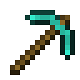

双版本统一
Java 版与基岩版共用一套版本库。正式版、快照、愚人节版本、远古版本与基岩版核心，都在同一个入口里。
启动器不只是把游戏叫起来。版本、加载器、资源包、存档、账户、下载源与联机，都被整理成可以理解、可以调整的模块。
它更像一套完整的 Minecraft 工作台：把常用的、容易出错的地方做好，把选择权留给玩家。
Java 版与基岩版共用一套版本库。正式版、快照、愚人节版本、远古版本与基岩版核心，都在同一个入口里。
微软 OAuth 设备码登录与离线账户并存；正版皮肤、离线皮肤包、Java 会话与基岩版授权检测都已接好。
每个版本独立配置内存、窗口、JVM 参数、启动语言、版本隔离、进程优先级与启动器行为，互不干扰。
Modrinth 与 CurseForge 搜索，中文关键词自动翻译成英文；模组落到对应实例，光影、资源包与数据包各归其位。
公网 IPv6 点对点直连，分享码一键加入；局域网广播让好友的世界直接出现在「多人游戏 → 局域网」。
主题、壁纸、模糊与透明度、字体、自定义主页与窗口文案。启动器可以完全长成你喜欢的样子。
不需要先读完整本手册。下载版本、选个账户、点启动，剩下的交给启动器。

在下载中心选择 Java 或基岩版核心；需要模组时顺手挑一个 Forge、NeoForge、Fabric 或 Quilt 实例。
登录微软账户，或直接用离线昵称。Java 会自动匹配；缺失时启动器会下载 Temurin JRE。
一键进入游戏。想和朋友一起玩，就在联机页创建房间，把分享码发过去。
界面使用 Electron 内置 Chromium，下载、解包、校验、启动编排与 EasyTier 进程都在 Rust 侧完成。React 只负责把状态与操作呈现出来，下载任务不会因为切换页面而中断。